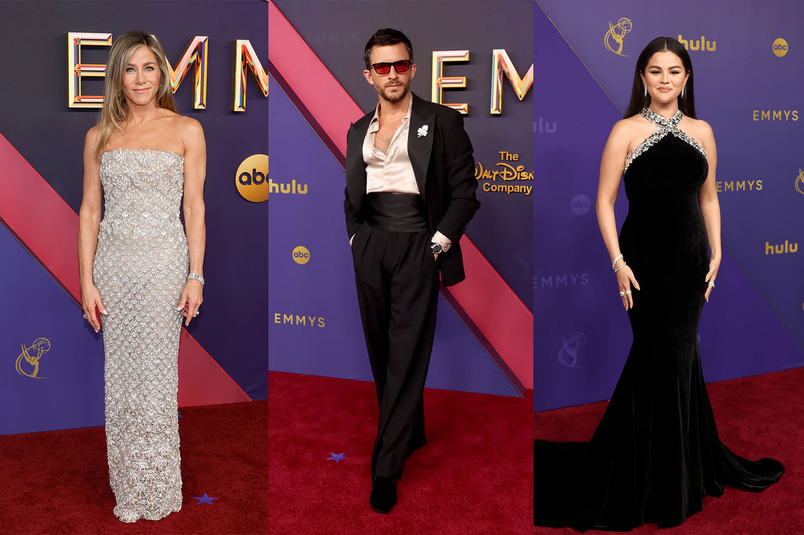

ARTS & MAGAZINE
Donde el arte encuentra a laMODA
Tendencia
Vivienne Westwood
MODA Y ARTE MODERNO
Un paso a la modernidad, Calvin Klein/Minimalist as Modernity
Inspiración: El arte moderno ha jugado un papel crucial en la evolución de la moda contemporánea. A lo largo de las décadas, artistas visuales han inspirado a diseñadores de moda, que integran sus ideas revolucionarias en colecciones y pasarelas.
Las colecciones de Jil Sander y Calvin Klein han reflejado este enfoque minimalista, centrado en la funcionalidad y la estética pura.
ARTE DE PERFORMANCE Y MODA
Arte Contemporáneo por McQueen, Primavera/Verano 1999
La relación entre el cuerpo humano y la tecnología: McQueen exploraba la tensión entre lo humano y lo mecánico, lo tradicional y lo futurista. En este caso, los robots, símbolos de la tecnología industrial, actúan sobre el cuerpo de la modelo y la moda en tiempo real.
El momento más icónico del desfile ocurrió hacia el final, cuando la modelo Shalom Harlow apareció en la pasarela con un vestido blanco de corte sencillo y líneas limpias, que recordaba a una pieza en blanco, lista para ser intervenida. La modelo se colocó en una plataforma giratoria en el centro de la pasarela, donde dos robots industriales, originalmente utilizados para pintar automóviles, comenzaron a rociar el vestido con pintura negra y amarilla mientras la plataforma giraba.


SURREALISMO EN LA MODA
ELSA SCHIAPARELLI, EL VESTIDO DE LANGOSTA/1937
Schiaparelli y Dalí La prenda, un elegante vestido de noche blanco con una enorme langosta pintada a mano en la falda, fue un claro ejemplo de cómo el surrealismo podía influir en la moda. Dalí, quien tenía una obsesión simbólica con la langosta, creó esta imagen para el vestido como un símbolo de sexualidad y peligro. La pieza fue modelada por Wallis Simpson, duquesa de Windsor, en una famosa sesión de fotos de la época.
La langosta pintada no solo desafiaba el propósito decorativo del vestido de alta costura, sino que también era una referencia a la incongruencia y las metáforas oníricas tan características del surrealismo.


Tendencias de Moda Inspiradas en el Arte
Un análisis profundo de las colecciones más recientes de diseñadores que han encontrado inspiración en movimientos artísticos.
Descubre cómo diseñadores como Dior y Alexander McQueen toman inspiración de movimientos como el cubismo y el arte abstracto para crear colecciones revolucionarias.
Publicaciones Populares
-
¡TAYLOR SWIFT EN LOS VMAS!
Deslumbra en la red carpet. -

EMMYS 2024
¿Quiénes fueron los mejores vestidos? -
WINTOUR VS CAMPBELL
El beef del momento. -
EMILY EN PARIS ESTÁ DE VUELTA
Outfits, Drama y Publicidad
Publicidad
Tags
Fashion New York London Hats Norway Sweaters Ideas Deals Accessories News Clothing Shopping Jeans Trends
Iconos del mes


Síguenos en
Suscríbete
Regístrate con tu correo y no te pierdas de las últimas novedades.